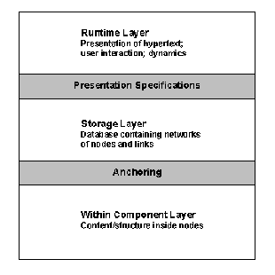

Hypermedia – Dexter Hypertext Reference Model
2.5 Dexter Hypertext Reference Model
The Dexter Hypertext Reference Model captures the important abstractions found in a wide range of existing and future hypertext systems [Halasz & Schwartz, 1990]. The goal of the model is to provide a systematic basis for comparing systems and to develop interchange and interoperability standards. The Dexter model divides a hypertext system into three layers (see Figure 6.4):
a. Runtime Layer
This layer deals with the presentation of hypertext and the dynamics of user interaction. Since it is too broad and diverse to be developed into a generic model, the Dexter model does not go into the details of the presentation mechanism. However, presentation mechanisms can be specified containing information about how a component/network is to be presented to the user. These presentation specifications provide an interface between the runtime layer and the storage layer.
b. Storage Layer
This is the main focus of the Dexter model. It models a database that is composed of a hierarchy of data-containing components which are interconnected by relational links. Components have unique identifiers and links can be identified by a set of two or more component identifiers. Components correspond to the general notion of nodes and can contain text, graphics, images, audio, video etc. The components are treated as generic containers of data and the model does not specify any structure within the containers. Thus, the storage layer does not differentiate between text components and graphics components. It focuses mainly on the mechanism by which components and links are tied together to form hypertext networks.
c. Within Component Layer*
This layer is concerned with the contents and structure within components of the hypertext network. Since the range of possible content/structure that can be included in a component is open-ended, the Dexter model treats this layer as being outside its scope. The assumption is that document structure models such as ODA, SGML, IGES etc., will be used in conjunction with this model to capture content/structure. However, a critical interface between the storage layer and the within-component layer called anchoring discusses the mechanism of addressing locations or items within the content of an individual component. Anchors can identified by a unique anchor identifier.

Figure 6.4: Dexter Hypertext Reference Model [Halasz & Schwartz, 1990].
Halasz and Schwartz claimed that no existing systems support all the mechanisms discussed in the Dexter model. However, existing systems are yet to be fully compared to this model. The model has been used in developing the Dexter Interchange Format, a hypertext interchange standard.